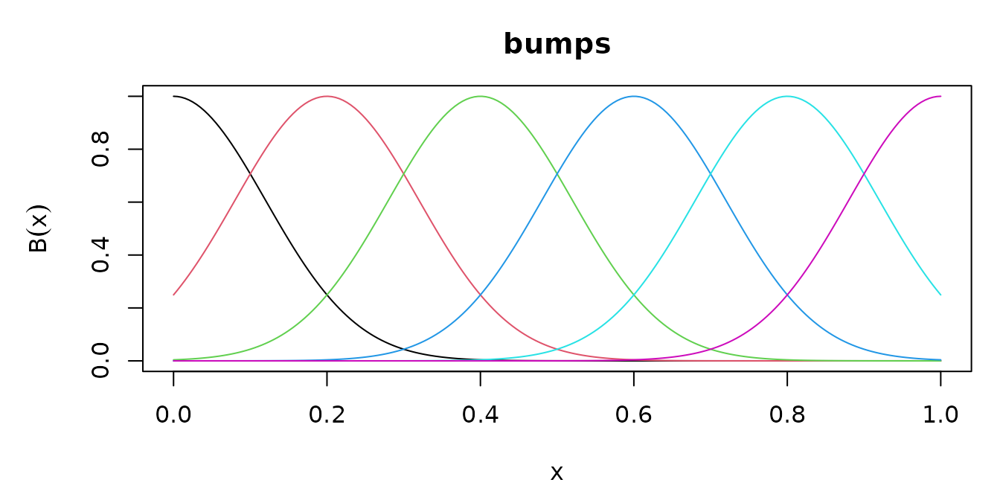

A basis that only worked for the three families the package ships would have solved nothing. This vignette adds one the package does not ship, and shows what the package guarantees about it at each step.
The minimum
A new basis is a subclass of basis and a method for
basis_eval(). Nothing else is required.
Take a basis of Gaussian bumps, at equally spaced centers . They are not orthogonal, not a partition of unity, and have no compact support, so nothing about them is inherited from the families already here.
Bumps <- S7::new_class("Bumps", parent = basis)
S7::method(basis_eval, Bumps) <- function(basis, x, ...) {
p <- basis@basis_params
out <- exp(-0.5 * outer(x, p$centers, "-")^2 / p$width^2)
colnames(out) <- basis_colnames(basis)
out
}
bumps <- function(lower = 0, upper = 1, dimension = 6, width = 0.12) {
Bumps(
basis_name = "bumps",
dimension = as.integer(dimension),
lower = lower, upper = upper,
basis_params = list(
centers = seq(lower, upper, length.out = dimension),
width = width
)
)
}
b <- bumps()
b
#> Basis: bumps
#> Functions: 6 Variables: 1
#> Domain: [0, 1]
#> Parameters:
#> centers <6 values>
#> width 0.12
#> Numerical: basis_deriv, basis_int, basis_gramThe object already answers all four generics.
round(basis_deriv(b, 0.5, order = 1), 4)
#> bu1 bu2 bu3 bu4 bu5 bu6
#> [1,] -0.0059 -0.9154 -4.9073 4.9073 0.9154 0.0059
round(basis_int(b, 1), 4)
#> bu1 bu2 bu3 bu4 bu5 bu6
#> [1,] 0.1504 0.2864 0.3007 0.3007 0.2864 0.1504
round(basis_gram(b)[1:3, 1:3], 4)
#> bu1 bu2 bu3
#> bu1 0.1063 0.0935 0.0131
#> bu2 0.0935 0.2107 0.1062
#> bu3 0.0131 0.1062 0.2127
plot(b)
Two conventions the method has to keep. The column names come from
basis_colnames() rather than being written out, so that
evaluation, derivatives and integrals always agree on them. And a
missing evaluation point must give a missing row: here
outer() propagates it for free, which is worth checking
rather than assuming.
What the fallbacks are, and what they are not
The three derived generics have numerical methods registered on the
basis class. The object says which ones it is using:
basis_is_numerical(b)
#> basis_deriv basis_int basis_gram
#> TRUE TRUE TRUEThe derivatives are one central-difference stencil, built from a Vandermonde solve and applied in a single step. That is not the same as composing first differences: each numerical differentiation multiplies the error of the one before it, so a third derivative reached by three nested first differences is noise. Near the interval endpoints the stencil becomes one-sided, because a symmetric one would ask for points outside the interval where the basis is not defined.
# the closed form, for comparison: d/dx exp(-(x-c)^2/2s^2) = -(x-c)/s^2 * f
x <- seq(0, 1, length.out = 5)
exact <- -outer(x, b@basis_params$centers, "-") / b@basis_params$width^2 *
basis_eval(b, x)
max(abs(basis_deriv(b, x, order = 1) - exact))
#> [1] 4.801691e-09The integral is anchored: its value at the lower endpoint is exactly zero, for every basis. Any antiderivative satisfies a differentiation check, so leaving the constant free would let two bases disagree while both looked right, and a sum of them would be wrong with nothing to report it.
basis_int(b, b@lower)
#> bu1 bu2 bu3 bu4 bu5 bu6
#> [1,] 0 0 0 0 0 0Adding a closed form
A closed form registered later takes over through dispatch, with no change to calling code. Here is the derivative, which is one line for this family:
S7::method(basis_deriv, Bumps) <- function(basis, x, order = 1L, ...) {
p <- basis@basis_params
z <- outer(x, p$centers, "-") / p$width
# Hermite: the d-th derivative of a Gaussian is He_d(-z) / width^d times it
he <- switch(order + 1L,
1, -z, z^2 - 1, -z^3 + 3 * z,
stop("order above three not derived here", call. = FALSE)
)
out <- he / p$width^order * basis_eval(basis, x)
colnames(out) <- basis_colnames(basis)
out
}
basis_is_numerical(b)
#> basis_deriv basis_int basis_gram
#> FALSE TRUE TRUEOnly that one generic changed; the integral and the Gram matrix are still computed numerically, and the object says so.
Validating it
check_basis() runs six numerical checks. It reports a
quantity that came from a fallback as unchecked rather
than as passed: comparing a finite difference against a finite
difference would be the same arithmetic twice, agreeing however wrong
the basis is.
invisible(check_basis(b))
#> check_basis: bumps (6 functions)
#> shape shapes and column names [PASSED]
#> deriv derivatives against finite differences [PASSED]
#> integral integral differentiates back, zero at lower [numerical]
#> partition partition of unity [not claimed]
#> gram Gram symmetric, PSD, matches quadrature [PASSED]
#> missing missing values give missing rows [PASSED]
#> computed numerically: basis_int, basis_gramThe derivative row is now checked, because the family supplies its own method, while the integral row is not, because it does not.
The check allows for the accuracy of its own reference. Each reference is computed at a step and at half of it, and the gap between them bounds its uncertainty; the comparison is given that much slack, point by point. Without it, a spline would fail at its own knots, where the third derivative jumps and a central difference returns the jump rather than the truncation error.
That allowance has to excuse the reference and nothing else, so it is worth confirming that a wrong derivative still fails:
Wrong <- S7::new_class("Wrong", parent = Bumps)
S7::method(basis_deriv, Wrong) <- function(basis, x, order = 1L, ...) {
1.05 * S7::method(basis_deriv, Bumps)(basis, x, order = order)
}
wrong <- Wrong(
basis_name = "wrong", dimension = b@dimension, lower = b@lower,
upper = b@upper, basis_params = b@basis_params
)
check_basis(wrong, verbose = FALSE)[["deriv"]]
#> [1] FALSEInner products
basis_gram() returns
,
which is what a roughness penalty integrates:
is the integral of the squared
-th
derivative of the function the coefficients describe.
beta <- rnorm(b@dimension)
f2 <- function(t) (basis_deriv(b, t, order = 2) %*% beta)^2
c(
quadratic_form = drop(t(beta) %*% basis_gram(b, order = 2) %*% beta),
integral = integrate(function(t) apply(cbind(t), 1, f2), 0, 1)$value
)
#> quadratic_form integral
#> 4034.599 4034.599The measure is an argument. The default is Lebesgue on the interval;
at takes the empirical measure of a sample, which is the
matrix a design matrix produces, and weight takes a
weighted integral.
xs <- runif(2000)
round(basis_gram(b, at = xs)[1:3, 1:3], 4)
#> bu1 bu2 bu3
#> bu1 0.1125 0.0983 0.0132
#> bu2 0.0983 0.2118 0.1067
#> bu3 0.0132 0.1067 0.2227Both are handled in the body of the generic, before dispatch, so a method never sees them. A method must still name them in its signature, because S7 requires a method’s formals to contain the generic’s:
S7::method(basis_gram, Bumps) <- function(basis, order = 0L, at = NULL,
weight = NULL, ...) {
# a closed form would go here; this one just tightens the quadrature
basis7:::numerical_gram(basis, order, panels = 200L, nodes = 12L)
}
basis_is_numerical(b)
#> basis_deriv basis_int basis_gram
#> FALSE TRUE FALSETransforming it
Orthonormalization, an identifiability constraint and the Demmler-Reinsch construction are the same operation, , so they share one class. Derivatives and integrals transform by the same , and the Gram matrix by congruence, so a parent with an exact Gram matrix passes its exactness on.
o <- orthonorm_basis(b)
round(basis_gram(o), 10)[1:4, 1:4]
#> on1 on2 on3 on4
#> on1 1 0 0 0
#> on2 0 1 0 0
#> on3 0 0 1 0
#> on4 0 0 0 1A constraint reduces the dimension by its rank:
grid <- seq(0, 1, length.out = 200)
cs <- constrain_basis(b, colSums(basis_eval(b, grid)))
c(before = b@dimension, after = cs@dimension)
#> before after
#> 6 5
max(abs(colSums(basis_eval(cs, grid))))
#> [1] 5.662137e-15And dr_basis() builds the basis that diagonalizes the
empirical inner product and the penalty at once, and is empirically
orthogonal to a constant and to
.
It works on any basis, this one included:
xd <- sort(runif(300))
d <- dr_basis(b, xd)
z <- basis_eval(d, xd)
c(
off_diagonal = max(abs(crossprod(z)[upper.tri(crossprod(z))])),
orthogonal_to_1_and_x = max(abs(crossprod(cbind(1, xd), z)))
)
#> off_diagonal orthogonal_to_1_and_x
#> 7.815970e-14 1.501022e-13Transforms compose by multiplication rather than by nesting, so a chain of them costs one matrix product per evaluation however long it is:
S7::S7_inherits(orthonorm_basis(cs)@parent_basis, TransformedBasis)
#> [1] FALSEMultiplying it
A basis of several variables is a product of bases of one, and any basis can be a factor, including this one. The result takes a matrix of points with one column per variable, and the derivative order becomes a multi-index.
tb <- tensor_basis(b, bspline_basis(dimension = 5))
c(variables = basis_nvar(tb), functions = tb@dimension)
#> variables functions
#> 2 30
xy <- cbind(runif(6), runif(6))
dim(basis_deriv(tb, xy, order = c(1, 2)))
#> [1] 6 30Everything about the product follows from the marginals, because the product separates. The Gram matrix in particular is the Kronecker product of the marginal ones, so it stays as exact as they are however many variables there are, where a quadrature over the box would degrade with every one:
max(abs(basis_gram(tb) - kronecker(
basis_gram(b), basis_gram(bspline_basis(dimension = 5))
)))
#> [1] 0What does not stay cheap is the design matrix, whose columns are the
product of the marginal dimensions. basis_contract()
computes the values the coefficients describe without forming it.
Coefficients come as an array, whose dimensions line up with the
marginals:
cf <- array(rnorm(tb@dimension), dim = c(b@dimension, 5))
max(abs(basis_contract(tb, xy, cf) -
basis_eval(tb, xy) %*% as.numeric(aperm(cf))))
#> [1] 0or as factor matrices, one per marginal with a shared number of columns, in which case neither the design matrix nor the coefficient array is ever formed and the cost is linear in the number of variables:
gam <- list(
matrix(rnorm(b@dimension * 2), b@dimension, 2),
matrix(rnorm(5 * 2), 5, 2)
)
head(basis_contract(tb, xy, gam), 3)
#> [1] -0.9356725 -0.6649577 -0.6739005Choosing those factors is a modeling decision, and belongs to the layer that owns the parameters. Evaluating them is basis arithmetic, and belongs here.
Summary
-
Minimum to define a basis: a subclass of
basisand abasis_eval()method whose columns are named bybasis_colnames(). - From the evaluation alone come the derivatives, the integral and the
Gram matrix, and
basis_is_numerical()says which are which. - Register closed forms one at a time; each takes over through dispatch.
-
check_basis()verifies what can be verified and reports the rest as unchecked rather than as passed. - Every transform of a basis is one linear map, and it keeps the parent’s exactness.
- A product of bases is a basis of several variables; its Gram matrix
is the Kronecker product of the marginal ones, and
basis_contract()evaluates it against coefficients without forming the product.